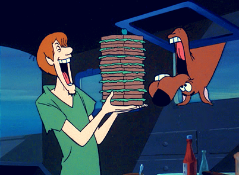

The origin of the term hoosier has gathered much interest and speculation thruought the development of our state. The never ending debate has forced me to call in the mystery team to see if they cant get to the bottom of the meaning.
I have informed the mystery time of the many common assumptions about the word. They have informed me of some that I had not yet heard. We all agreed that we needed to get to the bottom of it, so I ate a big sandwitch with shaggy and scooby and we began with our work on the research.
We found the most popular belief is that the word Hooosier originated from pioneer times when someone would knock on a cabins door, the owner would respond, "Who's there" in a way that sounds a lot like Hoosier.
I personally believe that the term is a result of unflattering mispronunciations of words said in weird circumstances in Indiana somewhat long ago.
